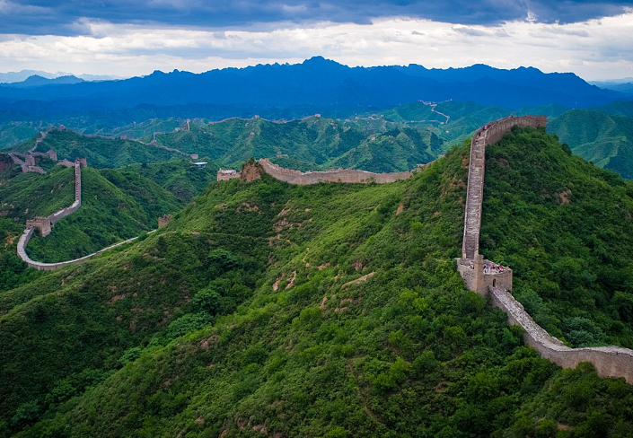
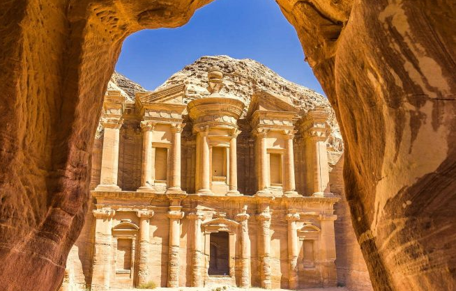
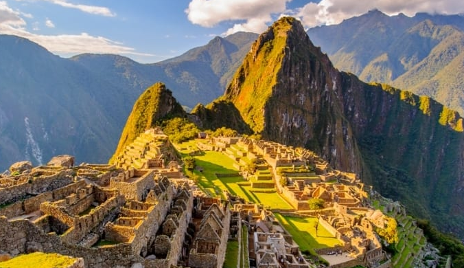
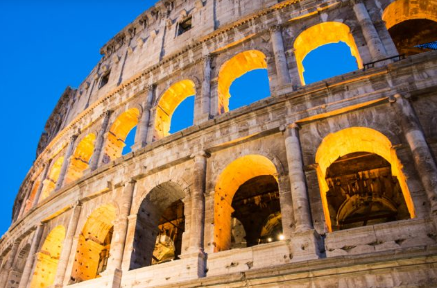
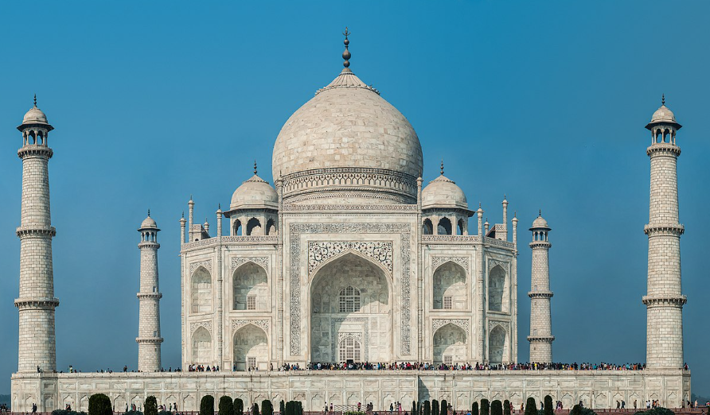

As Sete Maravilhas do Mundo
1. Grande Muralha da China
A Grande Muralha da China é uma antiga série de muralhas e fortificações localizadas no norte da China, construídas para proteger o país de invasões. A muralha se estende por milhares de quilômetros e é uma das estruturas mais impressionantes já construídas pela humanidade.
2. Petra, Jordânia
Petra é uma cidade histórica e arqueológica no sul da Jordânia, famosa por sua arquitetura esculpida em rochas e por seu sistema de condução de água. A cidade também é conhecida como a "Cidade Rosa" devido à cor das pedras nas quais é esculpida.
3. Cristo Redentor, Brasil
O Cristo Redentor é uma estátua de Jesus Cristo localizada no topo do Morro do Corcovado, no Rio de Janeiro. Inaugurada em 1931, a estátua é um símbolo do cristianismo em todo o mundo e uma das atrações turísticas mais populares do Brasil.

4. Machu Picchu, Peru
Machu Picchu é uma antiga cidade inca situada no alto das montanhas dos Andes, no Peru. Construída no século XV e abandonada um século depois, Machu Picchu é famosa por sua arquitetura avançada e por seu cenário deslumbrante.
5. Chichén Itzá, México
Chichén Itzá é uma grande cidade maia localizada na península de Yucatán, no México. O local é famoso pela pirâmide de Kukulcán, um templo escalonado que demonstra o conhecimento avançado dos maias em astronomia e arquitetura.

6. Coliseu, Itália
O Coliseu é um antigo anfiteatro romano localizado no centro de Roma, na Itália. Construído no século I, o Coliseu é conhecido por suas grandiosas lutas de gladiadores e outros eventos públicos. É uma das maiores obras de engenharia e arquitetura da Roma antiga.
7. Taj Mahal, Índia
O Taj Mahal é um mausoléu de mármore branco situado em Agra, na Índia. Construído pelo imperador Mughal Shah Jahan em memória de sua esposa favorita, Mumtaz Mahal, o Taj Mahal é uma das mais belas estruturas arquitetônicas do mundo e um símbolo do amor eterno.
